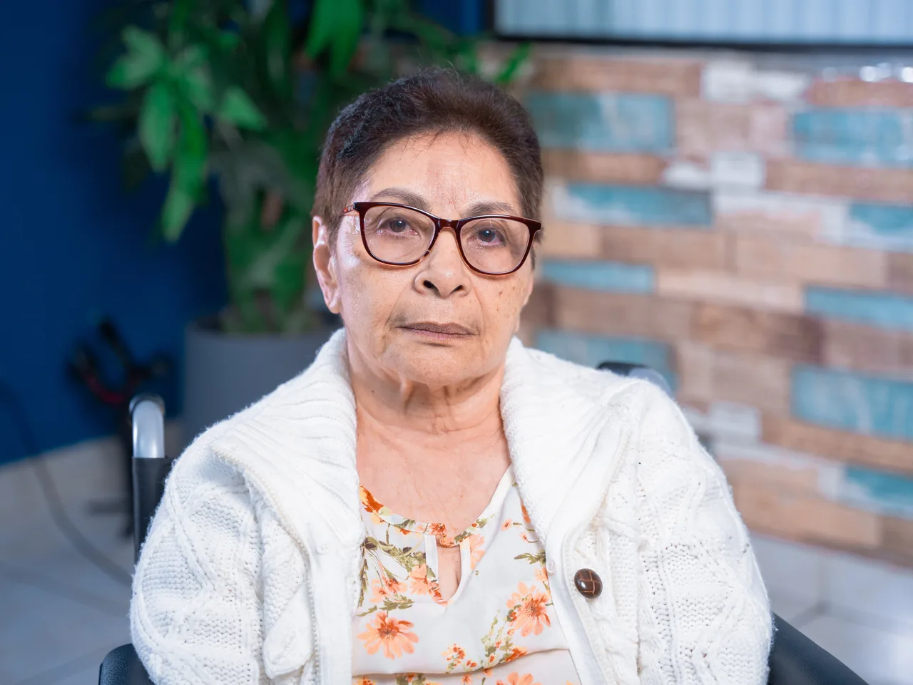

ALMA · Recibo de cirugíaNo. 001
Cirugía de cataratas
Sololá, todo el año, con la Dra. Vicky Loza
- Quirófano, anestesia, lente y servicios de la Dra. Vicky Loza
- $350
- Total: el costo real de una cirugía
- $350
Giving Tuesday Giving Tuesday termina a las 11:59 p. m. MST (America/Denver) del 1 de diciembre de 2026 Donaciones de fin de año Ayuda a financiar las misiones quirúrgicas de ALMA en 2027 en Guatemala. Apoya la cirugía en Guatemala Tu donación va casi por completo a la atención directa.
Donar en Givebutter (se abre en una pestaña nueva)Patrocina una cirugía
Elige una cirugía, mira lo que realmente cuesta en el hospital y patrocínala con un toque.
Cada $350 es el costo real de una cirugía de cataratas: quirófano, anestesia, lente y cirujana.
Los donantes han dado lo suficiente para cubrir el costo real de 0 cirugías de cataratas, o 0 reemplazos de rodilla, o 0 reemplazos de cadera.
La campana suena cada vez que las donaciones cubren una cirugía de cataratas más ($350).

ALMA · Recibo de cirugíaNo. 001
Sololá, todo el año, con la Dra. Vicky Loza

ALMA · Recibo de cirugíaNo. 002
Centro Médico Renacer, Ciudad de Guatemala
Un hospital privado moderno con cirujanos guatemaltecos.
Patrocina esta rodilla: $3,300Redondeado para ayudar a cubrir insumos y logística.
¿Tienes un fondo asesorado por donantes (DAF)? Dona desde él en 2 minutos
ALMA · Recibo de cirugíaNo. 003
Centro Médico Renacer, Ciudad de Guatemala
Un hospital privado moderno con cirujanos guatemaltecos.
Este octubre el equipo completó 34 reemplazos de rodilla y cadera.
Patrocina esta cadera: $3,950Redondeado para ayudar a cubrir insumos y logística.
¿Tienes un fondo asesorado por donantes (DAF)? Dona desde él en 2 minutosCada donación ayuda
Las donaciones se procesan de forma segura en Givebutter y son deducibles de impuestos. A Love For Missions Abroad Inc. es una organización sin fines de lucro 501(c)(3), EIN 83-2378971. La atención continúa en 2027, con misiones en abril, junio y octubre.
Fondos asesorados, cheques e IRA
¿Ya apartaste dinero para caridad? Recomienda una subvención para ALMA en unos dos minutos.
Algunos proveedores de DAF tienen un monto mínimo por subvención.
Por favor incluye tu nombre en la nota de la subvención para poder agradecerte.
También para distribuciones caritativas calificadas (QCD) de una IRA y cheques de un DAF.
Cheques a nombre de:
A Love For Missions Abroad Inc.
Enviar a:
A Love For Missions Abroad Inc.
3272 North Alta Court
Coeur d'Alene, ID 83815
Memo (opcional): "Misiones quirúrgicas" y tu correo para enviarte un recibo.
Si tienes 70½ años o más, podrías hacer una distribución caritativa calificada (QCD) pidiendo al custodio de tu IRA que envíe una donación directamente a ALMA.
A nombre de: A Love For Missions Abroad Inc. · EIN: 83-2378971 · Enviar a: 3272 North Alta Court, Coeur d'Alene, ID 83815
Una QCD debe ir directamente del fiduciario de la IRA a la organización benéfica. Para 2026, el límite de exclusión del IRS es de $111,000 por persona elegible (Aviso 2025-67 del IRS). Una QCD puede contar para tu distribución mínima requerida. Por lo general no puedes deducir también el monto excluido como contribución caritativa. Consulta a tu asesor fiscal o al custodio de tu IRA. ALMA no puede dar asesoría fiscal.
ALMA es una organización 501(c)(3). EIN 83-2378971. Consulta a tu asesor fiscal sobre tu situación.